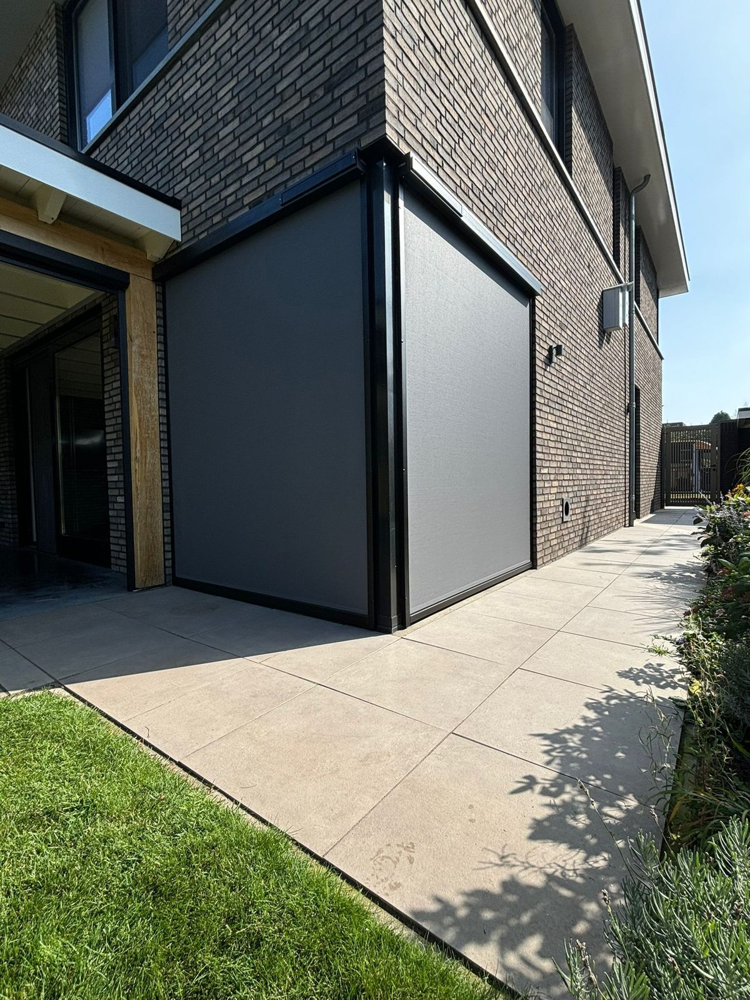

Op zoek naar zonwering in Herpen? Lucky Zonwering is dé lokale specialist sinds 1975. Vanuit onze werkplaats aan de Ussenstraat in Oss — op een paar minuten rijden van Herpen — leveren en monteren wij screens, rolluiken, terraszonwering en overkappingen op maat, met eigen monteurs, gratis advies aan huis en een 5,0 op Google.
Herpen ligt op een steenworp afstand van Oss, tegen de groene Maashorst aan. Of u nu in een ruime gezinswoning aan de rand van het dorp woont of in een karakteristiek pand in de oude kern: de zon weet uw raampartijen feilloos te vinden. De juiste zonwering houdt de warmte buiten, geeft privacy aan de straatzijde en maakt uw terras tot een fijne buitenplek. Als echt regionaal familiebedrijf kennen wij de woningen en de bouwstijlen rondom Herpen.
Geen webshop op afstand, maar een vaste contactpersoon die bij u in Herpen langskomt, inmeet en de montage zelf verzorgt. Hieronder leest u welke zonwering wij in Herpen leveren, hoe onze werkwijze eruitziet en waarom inwoners van het dorp al bijna vijftig jaar voor Lucky kiezen.
Elke gevel rond Herpen vraagt om een eigen oplossing. Tijdens het gratis advies aan huis kijken wij naar de ligging op de zon, het type ramen en uw wensen op het gebied van warmte, privacy en uitzicht. Dit zijn de soorten zonwering die wij in Herpen het meest plaatsen:
Strakke, naar buiten geplaatste screens houden de hitte tegen vóór die het glas raakt, terwijl u van binnenuit gewoon naar buiten blijft kijken. Ideaal voor grote raampartijen op het zuiden in de nieuwere woningen rond Herpen.
Op maat gemaakte rolluiken uit onze eigen werkplaats in Oss verduisteren de slaapkamer, weren warmte in de zomer, houden binnen in de winter en geven uw woning in Herpen extra inbraakwering.
Met een knikarmscherm, uitvalscherm, terrasoverkapping of pergola maakt u van uw tuin in Herpen een schaduwrijke buitenkamer — fijn als u na een wandeling door de Maashorst lekker buiten wilt blijven zitten.
Twijfelt u welke oplossing het beste past? Stel online uw zonwering op maat samen of vraag een gratis offerte aan.
Wij komen gratis en vrijblijvend bij u langs in Herpen, meten nauwkeurig in en denken eerlijk mee over type, kleur en bediening — handmatig, elektrisch of met slimme app-bediening. Daarna ontvangt u een heldere offerte op maat, zonder verplichtingen.

Onze eigen, ervaren monteurs rijden dagelijks vanuit Oss naar Herpen en omgeving. Zij plaatsen uw zonwering netjes en veilig en laten uw woning schoon achter. Geen wisselende onderaannemers, maar vaste vakmensen uit de regio — met korte lijnen en goede nazorg.

Ons bedrijf zit aan de Ussenstraat 26A in Oss, vlakbij Herpen. Doordat onze werkplaats, voorraad en monteurs allemaal in de buurt zitten, zijn wij snel ter plaatse — voor advies, montage én service. Een kapotte motor of een storing in uw zonwering? Dankzij onze eigen onderdelenvoorraad bent u meestal snel weer geholpen, ook bij merken die wij zelf niet geleverd hebben.
Vanuit Herpen combineren onze monteurs afspraken met die in de omliggende dorpen, zodat u snel aan de beurt bent en de prijs scherp blijft.
Benieuwd naar ons werk in de buurt? Bekijk onze projecten of lees waarom klanten voor Lucky kiezen.
Ja, Lucky Zonwering levert en monteert zonwering in Herpen en omgeving. Wij plaatsen screens, rolluiken, terraszonwering en overkappingen op maat, met eigen monteurs vanuit onze werkplaats in Oss.
Ja, voor woningen en bedrijven in Herpen komt Lucky Zonwering gratis en vrijblijvend inmeten en adviseren. U betaalt pas wanneer u akkoord gaat met de offerte op maat.
Wij werken vanuit onze werkplaats aan de Ussenstraat 26A in Oss, op slechts enkele minuten rijden van Herpen. Daardoor zijn de lijnen kort en zijn onze monteurs snel ter plaatse.
Voor een gratis adviesgesprek in Herpen kunnen wij meestal binnen enkele dagen langskomen. Na het inmeten volgt de montage doorgaans binnen enkele weken; de exacte levertijd hoort u tijdens het gesprek.
Screens zijn open doekzonwering die de hitte tegenhoudt terwijl u uw uitzicht behoudt, ideaal tegen warmte. Rolluiken sluiten volledig en bieden naast warmtewering ook verduistering, isolatie en inbraakwering. Lucky Zonwering adviseert u in Herpen welke het beste past.
Buitenzonwering zoals screens, knikarmschermen en terraszonwering houdt de warmte tegen vóór die het glas raakt en is daardoor het meest effectief tegen hitte. In Herpen plaatst Lucky Zonwering deze oplossingen op maat.
Ja, Lucky Zonwering levert en monteert terrasoverkappingen, veranda's en pergola's in Herpen. Zo maakt u van uw tuin een buitenkamer waar u ook bij fel zonlicht of een lichte bui blijft genieten.
Ja, Lucky Zonwering verzorgt reparatie en onderhoud van zonwering in Herpen, ook van andere merken. Dankzij onze eigen onderdelenvoorraad in Oss zijn storingen vaak snel verholpen.
De prijs van zonwering in Herpen hangt af van het type, de maatvoering en de bediening. Een enkele screen is voordeliger dan een complete terrasoverkapping. Lucky Zonwering meet gratis in en geeft daarna een heldere offerte op maat, zonder verplichtingen.
Lucky Zonwering is actief in Herpen en in de wijde omgeving. Bekijk ook onze zonwering in deze plaatsen:
Zonwering Berghem · Zonwering Lith · Zonwering Heesch · Zonwering Rosmalen · Zonwering 's-Hertogenbosch · Zonwering Nijmegen · Zonwering Megen · Zonwering Oss
Direct verder? Bekijk onze producten, onze projecten, vraag een gratis offerte aan of stel uw zonwering samen.